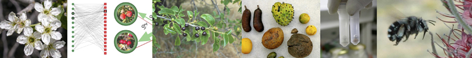
The Integrative Ecology Group at EBD was created in 2001 with the ultimate goal of exploring the component of biodiversity explained by the interactions among species. These interactions of mutual dependency shape complex networks acting as the architecture of biodiversity. One important characteristic of this research line is its interdisciplinary component, based on the integration of several approaches, mainly evolutionary ecology, population genetics, and theoretical ecology.
Our research explores to what extent ecological interactions shape the diversity of life within complex ecological systems. Our approach is synthetic and interdisciplinary, combining field work with the statistical analyses of large data sets and the development of mathematical models and simulations. Our central goal is to understand the functional role of ecological interactions in processes affecting biodiversity. This approach allows a systemic description of several ecological problems such as coevolution within diverse communities and the risk of collapse in the face of global change.
A major goal is the study of mutualistic networks between plants and their pollinators and seed dispersers. This approach allows us to understand how coevolution works within complex communities determining the variety of vital life histories, biogeographical patterns, and genetic structure within species. Similarly, our work on mutualistic networks provides a conceptual framework to understand how these networks and the services they provide would respond to global environmental change.
A second goal of our research line deals with the networks of connectivity and gene flow in fragmented landscapes. We employ molecular genetics techniques and network theory applied to metapopulations of several study species in Mediterranean, Macaronesian, and tropical areas. This approach allows us to quantify the role of pollinators and seed dispersers in the long-distance dispersal events and their effects on the genetic structure of plant populations. This gets us closer to understanding how global environmental change would affect plant communities in terms of dispersal and adaptation.
Molecular ecology of seed and pollen dissemination by animals
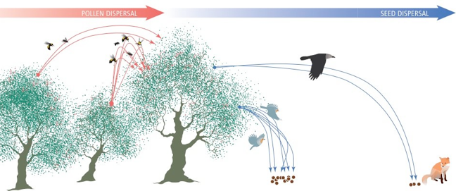
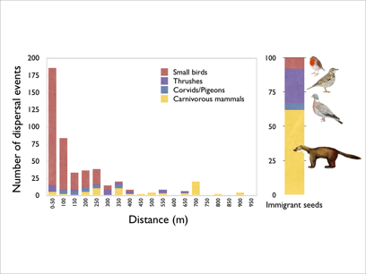
Plants stand still, but their genes move- rephrasing the title of a BES symposium held in Aug 2000. And for many plant species this movement is the result of mutualistic interactions with pollinators and frugivores. A long-standing challenge in studies of seed dispersal by animal frugivores has been the characterization of the spatial relationships between dispersed seeds and the maternal plants, i.e., the seed shadow. The difficulties to track unambiguously the origin of frugivore-dispersed seeds in natural communities has been considered an unavoidable limitation of the research field and precluded a robust analysis of the direct consequences of zoochory.
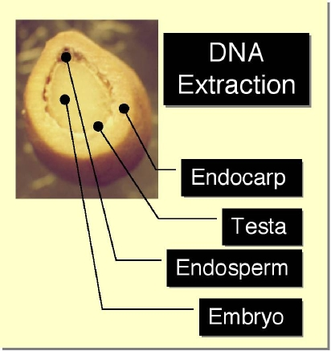
Together with José A. Godoy and Cristina García, we are using the multilocus genotype at SSR (microsatellite) loci of the woody endocarp, a seed tissue of maternal origin, to provide an unequivocal genetic fingerprint of the source tree. We have the help of JuanMi Arroyo and Cristina Rigueiro, technicians at the lab. By comparing the endocarp genotype against the complete set of genotypes of reproductive trees in a population, we were able to unambiguously identify the source tree for 79.7 % of the seeds collected in seed traps and hypothesized that the remaining 20.3 % of sampled seeds come from other populations.
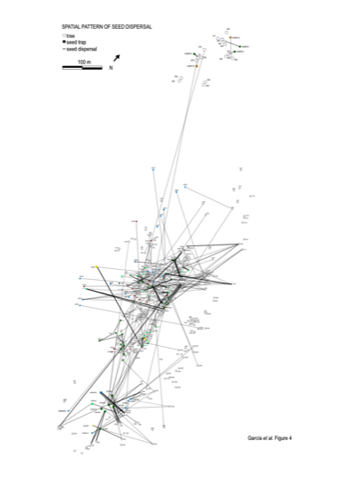
Identification of the source tree for Prunus mahaleb seeds dispersed by frugivores revealed a marked heterogeneity in the genetic composition of the seed rain in different microhabitats, with a range of 1-5 distinct maternal trees contributing seeds to a particular landscape patch. Within-population dispersal distances ranged between 0-1112 m, with up to 62 % of the seeds delivered within 15 m of the source trees. We are interested in the ecological and evolutionary implications of our results, indicating strong distance limitation of seed delivery combined with infrequent long-distance dispersal events, extreme heterogeneity in the landscape pattern of genetic makeup, and a marked mosaic of multiple parentage for the seeds delivered to a particular patch. A detailed description of our field methods and lab protocols is available here.
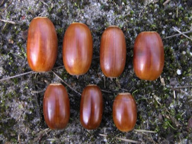
Together with Arndt Hampe and Rémy Petit we are investigating how seed dispersal by animals influences plant population genetic structure and its geographic patterns. We have a bilateral agreement between MEC and the INRA that funds this collaboration, including an exchange program between our labs. With Arndt we investigate how dispersal processes influence the persistence of relict tree populations at their rear-edge limit of their distributions in Europe. For these tree species (mainly oaks), pollen and seed dispersal are central for the maintenance of large scale patterns of genetic diversity. We are interested in assessing how gene flow patterns have contributed and contribute to the regional structuring of genetic diversity.
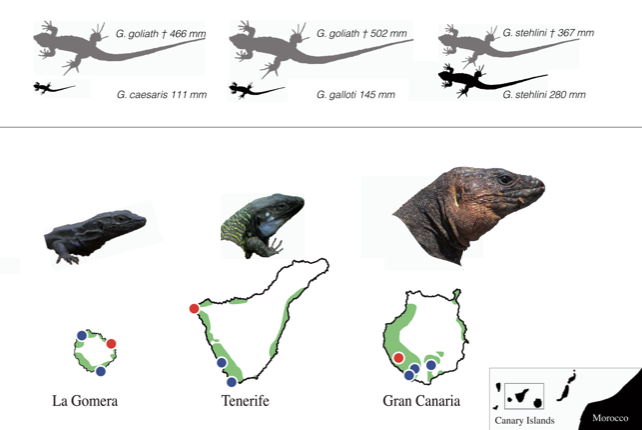
New projects directed by Alfredo Valido investigate the consequences of dispersal processes- especially seed dispersal- for endemic Canary Island plant species. In the Canary Islands, many fleshy-fruited plants depend on lizards for their successful dispersal and recruitment. We are now working in a project directed by Alfredo Valido to analyze the movement ecology of Canarian endemic Gallotia lizards and its consequences for plant dispersal and recruitment. We study the reproductive ecology of orijama plants Neochamaelea pulverulenta, an endemic Rutaceae in the islands, whose seeds are exclusively dispersed by the lizards.
We combine studies of fine- and medium-scale genetic structure with data and models of foraging movements of the lizards, monitoring with radio-tracking methods. So far the results are superb, and we now have detailed data on movement patterns of Gallotia galloti in Teno Bajo (Tenerife)- our main study site- and G. stehlini (in the photo) in Barranco de Veneguera (Gran Canaria). We have also seeds samples from two 1.2 ha plots in the two sites as well as leaf samples from >2000 plants to assess seed dispersal patterns with genetic methods, similar to those that we’ve been using with Prunus mahaleb and Frangula alnus. We are interested in assessing the potential effects of previous extinctions of other giant lizard species (e.g., G. goliath) that were very good dispersers of orijama. These were up to 1.3 m long and able to disperse even the largest fruits and seeds of orijama, which now remain undispersed on the plants; only the smaller fruits and seeds remain dispersed by the extant smaller lizards.
Fruit consumption and seed dispersal by animals
This is Pedro’s primary research line, started in 1979, which, over the time, has unfolded in the different research interests outlined in the other summaries of research. Mediterranean-type vegetation has physiognomic and biotic characteristics similar to some subtropical and tropical forests. Among them, the most relevant to us is the ubiquity and importance of interactions with animals in the reproductive cycle of plant species, especially the woody species. Around 45%, and up to 62%, of the woody species in a particular site are dispersed by animal frugivores. This mutualistic plant-frugivore interaction is thus a key element to understand the evolution and maintenance of diversity in these shrublands. Among frugivores, small passerine birds which are wintering migrants dominate; a rich and abundant production of fleshy fruits is thus a central element for them, a keystone resource to understand the organization of their annual cycle and the evolution of migration.
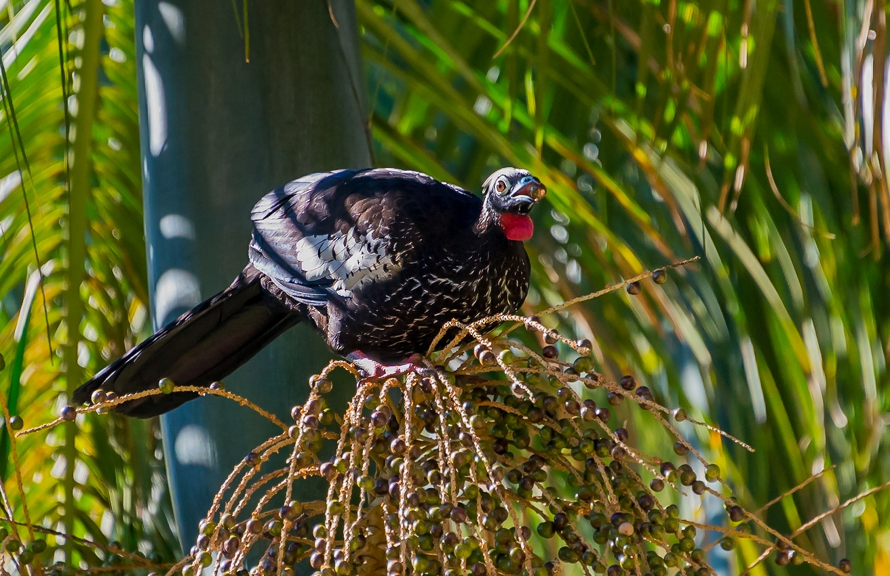
Pedro’s research has focused on both studies at the community level (starting with his PhD) and specific analyses of particular species. Among the plants his favorite species have been Rubus ulmifolius, Pistacia lentiscus, Olea europaea, and Prunus mahaleb. Among the frugivores, he focused on the Sylvia warblers and thrushes, Turdus species.
Since 2000 we’ve been collaborating closely with Mauro Galetti’s group in Rio Claro, Brazil. This research is funded by CSIC and CNPq and it covers an exchange plan between our labs. We are interested in all aspects of frugivory and seed dispersal. Since 2000 we are organizing the Latin American Frugivory and Seed Dispersal Field Course in Parque Estadual Ilha de Cardoso.
Complex networks of plant-animal interactions
Networks are graph representations that depict the patterns of connections among interacting elements. Mutualistic networks are assemblages of animals and plants that interact; and the outcome of the interactions has pervasive consequences for the ecology and evolution of each couterpart. Moreover, not only pairwise interactions are important in these networks: the connectedness among the different species has deep implications for the stability and persistence of the whole system.
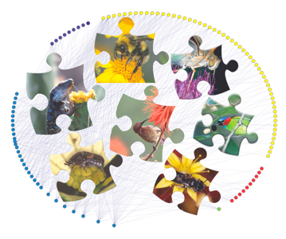
Together with Jordi Bascompte and Jens M. Olesen, we are examining the topology of networks of mutualists (plant-pollinator, plant-seed disperser) in an attempt to find out invariants in the interaction patterns similar to other biotic (e.g., trophic webs), abiotic (connections among circuit components, power lines, roads among cities) or social (friendship) networks. We are comparing the patterns of connectedness and generalisation level in plant-animal mutualistic networks in the wild with those of abiotic networks and computer-simulated networks.
These patterns of interactions behave as broad-scale networks, showing greater stability to loss or extinction of key species compared to random networks or scale-free networks. We are investigating how these mutualistic networks buildup and what are the consequences of species extinctions, fragmentation, and overall stability for the evolution and persistence of the mutualistic interactions.
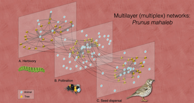
Our most recent project deals with the analysis of multiple interaction types that conform a special type of multilayer networks called multiplex networks. This allows us to understand the combined effects of multiple types of interactions affecting plants’ fitness within populations. This nicely bridges with recent work on individual-based networks, as it is a way to bridge complex networks with demographic and evolutionary processes. Demographic cycles in natural plant populations include a sequential series of “steps” where distinct types of interactions with different partners occur, either representing mutualistic or antagonistic effects.
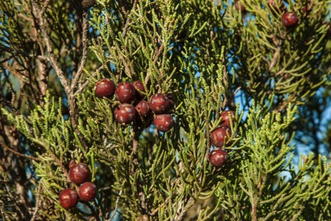
A recent project deals with the analysis of individual-based interaction networks. We aim to understand how different individuals within populations “organize” the diversity of ecological interactions with mutualists and antagonists, resulting in variable fitness effects. One major consequence of modern climate change is that many plant and animal species world-wide are displacing their geographic ranges in response to shifts of the climate to which they are adapted. However, we lack robust empirical data on how gene flow patterns are altered by drivers of global change and constrain evolutionary responses to them. We compare the diversified interaction patterns of juniper trees in Doñana, in areas of mature stands and areas of advance front during recent expansion due to habitat changes. We approach this with novel techniques for the analysis of multilayer networks, exploring at the individual tree level and with both mutualists (seed dispersers) and antagonists (pulp consumers, seed predators, herbivores) animal partners.
Seed dispersal by extinct megafauna
A central issue in the analysis of plant-animal coevolution is whether the patterns of mutual coadaptation can be inferred from present-day patterns of interaction. We are using comparative methods based on the analysis of phylogenetically independent contrasts to test adaptive hypotheses about correlated evolution between fruit traits and disperser types.
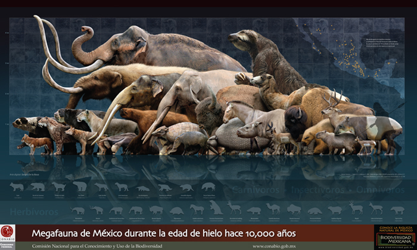
Suppose that a particular difference in, say, fruit diameter or pulp lipid content has evolved in a given clade in relation to divergence in frugivore types dispersing the seeds. Then a relationship between contrasts in the fruit trait and contrasts in the proportions of frugivore types will show up when examining the patterns through a phylogeny of the group.
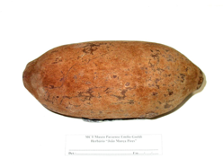
Our previous work on this topic has concentrated on analyses for the whole Angiosperm clade. Recently we are collaborating with Mauro Galetti and Marco Pizo, involving comparative analyses restricted to the tropical families Palmae and Myrtaceae. Together with Paulo R. Guimarães Jr., Mauro and Mathias Pires we are also analyzing the comparative ecology of the so-called anachronic seed dispersal systems, i.e., plant species with extremely large fruits supposedly dispersed by an extinct megafauna and having present-day interactions with surrogate frugivorous animals. The dataset, and additional information, for this study is available here.
The evolution of fruit traits
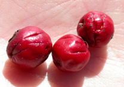
Fruits are complex structures with a high integration of characteristics: morphology, nutrient content of the pulp, and fruit color influence how frugivorous animals detect, handle, ingest, and digest the fruits. This has immediate consequences for the plants in terms of fitness variation and has deep influences in fruit traits evolution. Together with Alfredo Valido and H. Martin Schaefer we are investigating how fruit traits covary and define fruit displays: i.e., sets of correlated fruit traits that mediate in the interaction with mutualistic frugivores. We have a bilateral agreement between CSIC and the Deutscher Academischer Austausch Dienst that funds this collaboration. In addition, we collaborate with Mauro Galetti’s Laboratório de Biologia da Conservação in Brazil to study fruit characteristics of Mata Atlantica and Pantanal fruit species. This research is funded by CSIC and CNPq and it covers an exchange plan between our labs. The collaboration betwee our labs has also benefited from CYTED funding.
Ecological and demographic consequences of seed dispersal by frugivorous animals
The activity of frugivorous animals that disperse seeds has delayed consequences for plant demography. These consequences translate through the series of concatenated stages in plant recruitment that include seed delivery, survival to post-dispersal seed predators, seed germination, early seedling establishment, seedling survival up to sapling stage, and adult establishment. This is so because it matters not only how many seeds are dispersed by frugivores, but where the seeds are delivered and which are the concatenated probabilities of survival for these seeds in particular microhabitat patches that differ in quality for recruitment after dispersal.
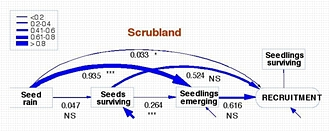
The figure illustrates an structural equation model fitted to the sequential probabilities of recruitment of Phillyrea latifolia in Mediterranean montane scrubland, SE Spain. The path model depicts the multiple and delayed influences, both direct and indirect, of frugivore-mediated seed-rain on later stages of recruitment. Together with Arndt Hampe, Paco Rodríguez, Juan-Luis García Castaño and Eugene W. Schupp, we are using this explicitly demographic approach to understand the multiple influences of frugivore activity on plant demography.
Spatial patterns and plant-animal interactions
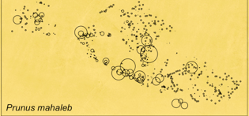
Spatial patterns in dispersed seeds and established seedlings are direct outcomes of frugivore activity and the concatenated series of demographic stages after dispersal. In collaboration with Cris García, We’ve been exploring the spatial consequences of seed dispersal by animals in Prunus mahaleb. High aggregation of the seed shadows occurs both in terms of the number of seeds dispersed and the genetic composition and structure of the seed rain. Together with Arndt Hampe, Eugene W. Schupp and Juan Luis García Castaño we have been addressing the patterns of spatial and temporal variation in the seed rain and seedling recruitment.
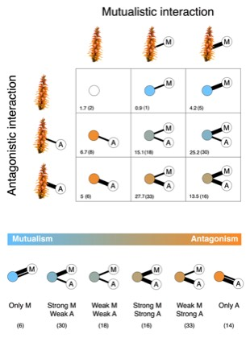
The balance between mutualistic and antagonistic plant–animal interactions and their spatial variation results in a highly dynamic mosaic of reproductive success within plant populations. Yet, the ecological drivers of this small-scale heterogeneity of interaction patterns and their outcomes remain virtually unexplored. Together with Alfredo Valido and Candelaria Rodríguez we have studied the spatial structure in the frequency and intensity of interactions that vertebrate pollinators (birds and lizards) and invertebrate antagonists (florivores, nectar larcenists, and seed predators) had when interacting with the insular plant Isoplexis canariensis, and their effect on plant fitness. This project was part of Cande’s PhD and is already completed. As a way to understand the complex patterns of context-dependency of plant-animal interactions, especially when studying individual-based interaction networks, we assessed interaction motifs to quantify this tremendous variability of interaction outcomes. Motifs are distinct “forms” in which individuals and species build-up their interactions; they are the basic units (as LEGO pieces) framing diversified interaction networks. The analysis of interaction motifs provides a useful way to categorize and explore diversified interaction patterns, especially when interactions with mutualists and antagonists are mixed up.
With Miguel Jácome we are starting to explore further this complexity by studying “multiplexed” interaction networks, i.e., the complex networks resulting of combined interactions with different partner types such as pollinators, frugivores, herbivores, etc. Miguel is working with palmito, Chamaerops humilis, in Doñana and is also interested in understanding how the context-dependent outcomes of interactions vary in space and are influenced by disturbance regimes.
Pollination biology
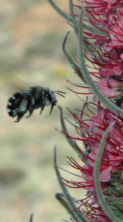
Together with Alfredo Valido, we are studying the pollination biology of Canary Islands plants. Specifically we are interested in the evolution of bird pollination in the islands and this is the main subject of Cande Rodríguez PhD thesis project. We are also investigating the plant-pollinator network in Parque Nacional del Teide and the effects of introduced honey bees (Apis mellifera) on the network structure and floral biology of endemic plants. In addition we have been working on pollen-mediated gene flow patterns in relictual tree species, with Frangula alnus and Quercus robur, for the PhD projects of Rocío Rodríguez and Eva Moracho, respectively. In these projects we are mostly interested in understanding the local structure of mating networks among individual trees and how they mediate in generating local structuring of genetic diversity. Moving up to regional scales we examine connectivity patterns and isolation among relictual stands of these trees, and how long-distance pollen dispersal mediates gene flow.